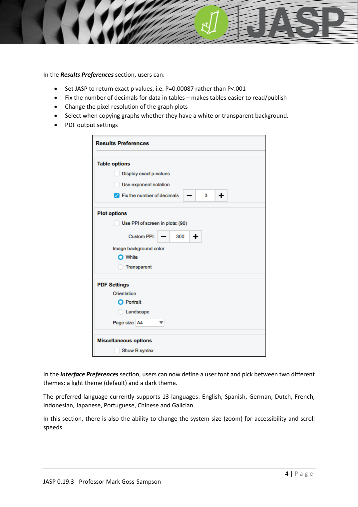

JASP_data_handling
JASP 資料處理：變數型態、編碼、標籤
JASP_lecture ←→ JASP_data_filtering JASP_data_editing JASP_data_transformation
三種變數型態
JASP 在欄位標頭以三種圖示區分變數尺度：
| 圖示 | 型態 | 說明 | 對應統計概念 |
|---|---|---|---|
| Nominal（彩色方塊） | 名目 | 無順序的類別（性別、品牌） | 卡方、二項式 |
| Ordinal（階梯） | 順序 | 有順序但間距不等（Likert、排名） | Spearman、無母數 |
| Continuous（尺） | 等距/比率 | 數值連續（身高、分數） | t、ANOVA、Pearson |
JASP 會在載入時自動猜測。遇到 Likert 1-5 的整數常被誤判為 nominal 或 continuous，需手動點欄位圖示切換。可在 Preferences > Data 調整自動判別的閾值。

編碼變數加標籤
點欄位名 → 開啟 Label Editor：
- 顯示原始 code 與標籤對應（如
1 = Male, 2 = Female） - 在 Label 欄輸入文字 → 試算表顯示文字、儲存的 code 仍為原值
- 存成
.jasp會自動保留所有編碼與分析
排序類別
預設依 value 升冪（1, 2, 3, 4）。在 Label Editor 可：
- ↑ ↓ 移動單一類別
- ⇅ 反轉全部順序
這個順序會直接決定圖形 X 軸與表格的顯示順序。
延伸
- 篩選資料：JASP_data_filtering
- 內部編輯與直接輸入：JASP_data_editing
- 變數轉換：JASP_data_transformation
- 概念詳解：social_science_statistics_book §1.1